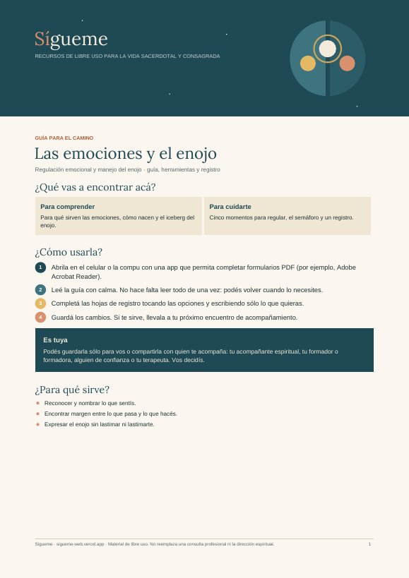

Guía para el camino
Las emociones y el enojo
Para qué sirven las emociones, cómo nacen, cinco momentos para regularlas, el semáforo del enojo y un registro.
¿Cómo se completa?
Ábrela en el celular o la compu con una app que permita completar formularios PDF, por ejemplo Adobe Acrobat Reader. Toca las opciones o escribe en los recuadros y guarda los cambios. Es para ti: puedes compartirla con quien te acompaña, si quieres.
Gratuito y de libre uso: puedes descargarlo, imprimirlo y compartirlo citando la fuente y sin fines comerciales. Más recursos en Sígueme.
